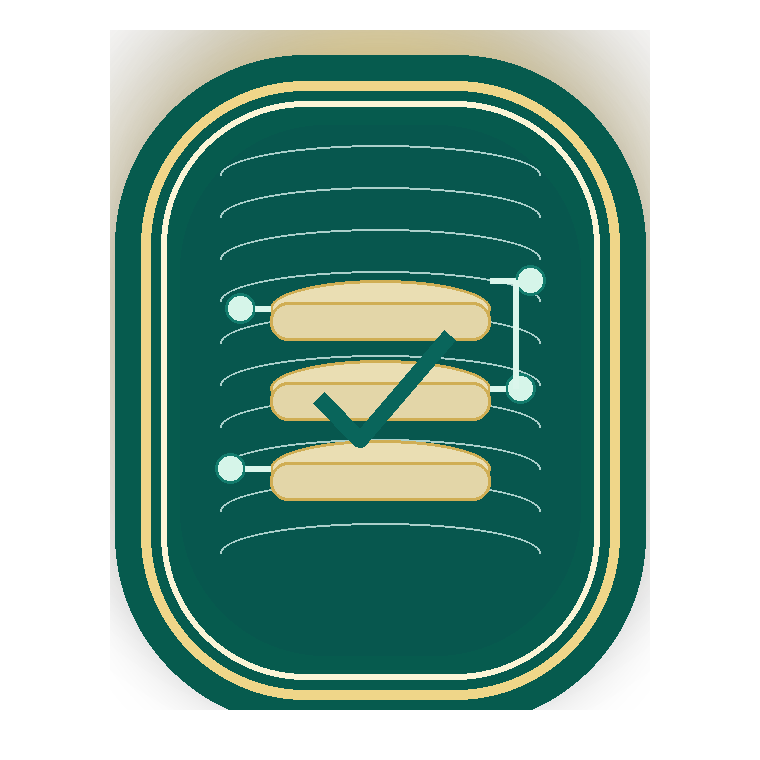
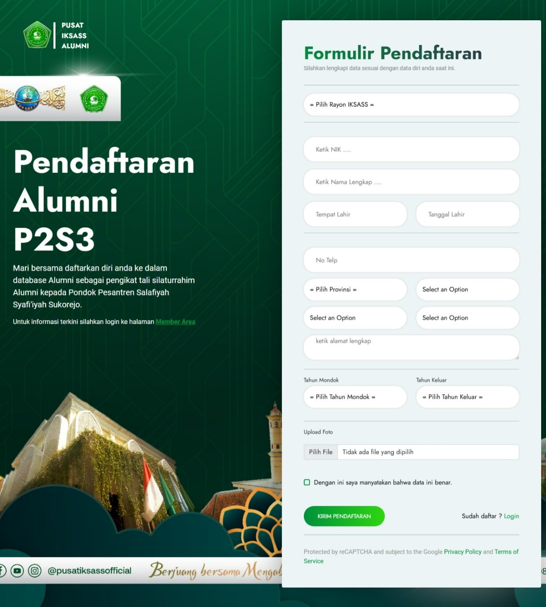
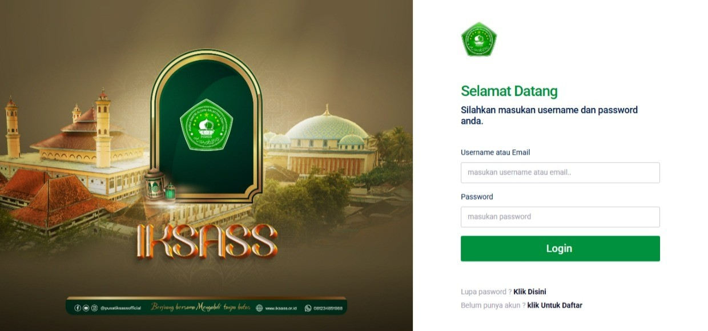
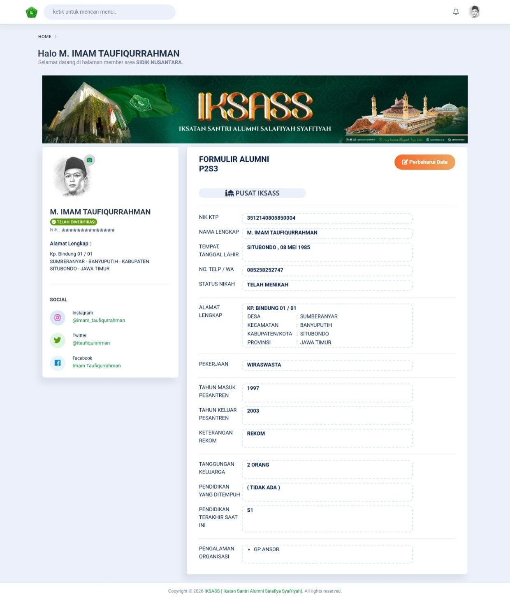

Layanan Digital IKSASS
SIDIK — Sistem Informasi Database IKSASS
Satu portal digital untuk pendataan alumni, verifikasi admin, pemetaan anggota, klasifikasi potensi, dan akses KTA digital melalui kta.iksass.id.
Terverifikasi
Database Alumni
KTA Digital
Pemetaan Anggota
SIDIK dibangun agar organisasi memiliki data alumni yang rapi, mutakhir, dan siap dipakai untuk penguatan program. Dari registrasi awal hingga profil anggota aktif, setiap tahap dirancang lebih tertib, lebih cepat, dan lebih mudah dipantau oleh pengurus maupun alumni.

Core Stack
Data alumni yang terhubung dari registrasi sampai KTA
Menghubungkan alur pengajuan data, validasi admin, profil anggota, dan identitas digital dalam satu pengalaman yang lebih modern.
Apa Itu SIDIK
Infrastruktur data untuk organisasi yang ingin bergerak lebih presisi
SIDIK bukan hanya halaman pendaftaran. Ia menjadi fondasi data organisasi untuk menghimpun alumni, membaca sebaran anggota, dan memperkuat pelayanan identitas digital secara berkelanjutan.
Penjelasan singkat
SIDIK adalah sistem informasi database IKSASS yang digunakan untuk menghimpun data alumni melalui registrasi online, mengelola validasi akun, dan menyusun basis data anggota secara terpusat.
Melalui sistem ini, pengurus pusat dapat menata data berdasarkan wilayah, jenis kelamin, tingkat kepengurusan, keahlian, dan profesi; sementara anggota memperoleh akses yang lebih rapi menuju KTA digital dan pembaruan profil.
Output utama
- Pemetaan anggota berdasarkan wilayah dan domisili
- Klasifikasi potensi alumni untuk kebutuhan program
- Verifikasi admin yang lebih tertib dan terlacak
- Profil anggota aktif yang siap terhubung dengan KTA digital
Fungsi Utama
Kenapa SIDIK penting untuk organisasi
Registrasi anggota
Menyediakan formulir yang lebih rapi agar data alumni masuk ke basis data IKSASS secara seragam dan siap diverifikasi.
Verifikasi data
Mendukung validasi akun, pengecekan kelengkapan informasi, dan proses persetujuan admin dengan alur yang lebih tertib.
Pemetaan & klasifikasi
Membantu pusat membaca potensi anggota berdasarkan daerah, profesi, keahlian, dan posisi kepengurusan.
KTA digital
Memberi akses kepada anggota untuk login, melihat KTA digital, dan memperbarui profil setelah akun diverifikasi.
Alur SIDIK
Alur yang sederhana, tampilan yang lebih profesional
SIDIK dirancang agar alumni bisa mengikuti proses pendaftaran sampai aktivasi akun tanpa terasa rumit. Tiga tampilan inti di bawah merangkum perjalanan pengguna dari pendaftaran, login, hingga profil alumni terverifikasi.
RegistrasiValidasiProfil Aktif
Tutorial Visual
Panduan langkah demi langkah berdasarkan tampilan asli SIDIK
Tiga tampilan utama di bawah disesuaikan langsung dari layar asli SIDIK agar alurnya lebih jelas, lebih realistis, dan tetap rapi saat dibaca di desktop maupun mobile.
Step 1
Isi formulir pendaftaran alumni
Mulai dari halaman pendaftaran alumni P2S3 di kta.iksass.id. Alumni melengkapi data dasar, rayon, wilayah domisili, tahun mondok, dan unggah foto sebelum pengajuan dikirim ke admin.
- Data masuk ke basis database alumni
- Wilayah dan rayon langsung bisa dipetakan
- Siap lanjut ke proses verifikasi
kta.iksass.id — Formulir Pendaftaran Alumni

Step 2
Masuk ke sistem SIDIK
Setelah akun aktif, anggota login menggunakan username atau email dan password. Halaman masuk ini menjadi pintu menuju area member SIDIK yang lebih tertata.
- Akses member area lebih cepat
- Status akun dapat dipantau
- Terhubung ke layanan data alumni
kta.iksass.id/login — Member Area

Step 3
Lihat profil alumni dan data terverifikasi
Sesudah diverifikasi admin, anggota dapat membuka dashboard dan profil alumni. Dari sini data pribadi, alamat, riwayat mondok, hingga identitas keanggotaan tersaji lebih rapi untuk layanan organisasi.
- Profil anggota tampil lengkap
- Status verifikasi terlihat jelas
- Data siap dipakai untuk pelayanan dan pemetaan
kta.iksass.id/member — Dashboard Alumni

Akses Cepat
Siap masuk ke SIDIK?
Gunakan portal SIDIK untuk pendataan alumni yang lebih rapi, verifikasi yang lebih cepat, dan identitas digital yang siap dipakai untuk penguatan program organisasi.